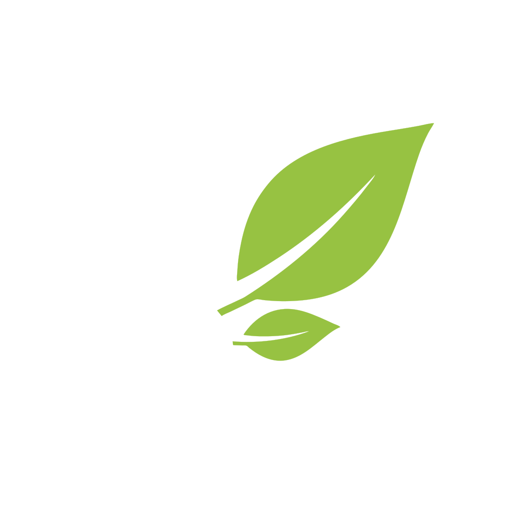

Menjadi organisasi kepemudaan terdepan dalam membangun generasi muda yang sadar, kritis, dan berdaya dalam menjaga keberlanjutan lingkungan hidup Indonesia.
Blooming a
sustainable future

Mendorong generasi muda untuk peduli, memilah, dan menjaga lingkungan.
Tentang EcoBloom
EcoBloom merupakan organisasi kepemudaan yang bergerak di bidang keberlanjutan lingkungan dan edukasi masyarakat. EcoBloom terdiri atas para pemuda dari berbagai sekolah yang memiliki kepedulian dan semangat yang sama untuk meningkatkan pendidikan, pengetahuan, dan kesadaran lingkungan di masyarakat.
EcoBloom hadir untuk memberikan akses terhadap edukasi lingkungan kepada masyarakat yang belum memiliki kesempatan yang sama dalam memperoleh informasi dan pengetahuan mengenai isu keberlanjutan. Melalui edukasi, kolaborasi, dan aksi nyata, EcoBloom berupaya mendorong generasi muda untuk tidak hanya memahami permasalahan lingkungan, tetapi juga mengambil peran dalam menciptakan solusi yang berkelanjutan.
Arah Kami: Visi & Misi
Visi
Misi
- Meningkatkan literasi lingkungan melalui program edukasi yang sistematis dan berbasis riset.
- Mengembangkan kepemimpinan lingkungan (environmental leadership) di kalangan pemuda.
- Mendorong aksi nyata dan proyek berkelanjutan di komunitas lokal.
- Membangun kolaborasi dengan warga setempat, sekolah, universitas, organisasi, dan instansi pemerintah.
- Mengintegrasikan nilai keberlanjutan dalam gaya hidup generasi muda.
Target Akhir Tahun
Melaksanakan program di
10+sekolah di Bandung Raya
Mengedukasi
500+murid kelas 4–6 mengenai ilmu keberlanjutan
Berhasil menjalin kemitraan dengan
7+sponsor untuk mendanai program dan berkembang
Lima tim, satu arah, satu EcoBloom
Setiap divisi memiliki peran masing-masing dan bekerja secara sinergis dalam menjalankan program serta mencapai tujuan organisasi.
Event & Logistik
Temp. description
Media
Temp. description
Substansi
Temp. description
Finance
Temp. description
Technology
Temp. description
Prinsip Kami
Kami menjadikan prinsip-prinsip ini sebagai dasar dalam setiap program, kolaborasi, dan aksi nyata.
Integritas Akademik & Riset
Setiap program edukasi dan informasi didasarkan pada data, fakta, dan sumber ilmiah yang akurat.
Transparansi
Menjaga keterbukaan dalam perencanaan dan pelaksanaan program serta komunikasi dengan pihak berkepentingan.
Keberlanjutan yang Inklusif
Mengembangkan solusi yang dapat diakses dan diterapkan berbagai lapisan masyarakat, termasuk komunitas pedesaan.
Kolaborasi Proaktif
Mengutamakan kerja sama terbuka dan sinergis untuk menciptakan dampak yang lebih luas.
Inovasi Berbasis Solusi
Mengembangkan ide, produk, dan aksi praktis yang berorientasi pada penyelesaian masalah lingkungan secara nyata.
Pemberdayaan Pemuda
Menempatkan pemuda sebagai perancang, pelaksana, dan pengembang solusi lingkungan.